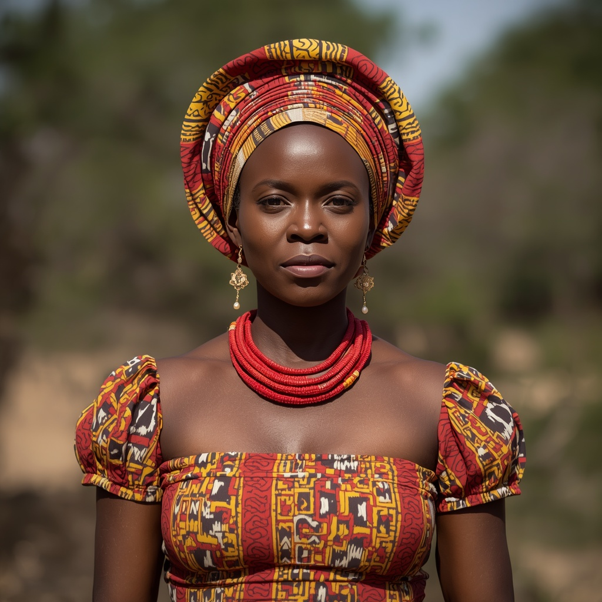

🧑🤝🧑 世界の民族・人びと
People of the World。国境を越えて暮らす人びとを、地域ごとに紹介します。伝統だけでなく、今の暮らしも一緒に。

ヨルバ
🗣 使用言語
ヨルバ語
👥 人口の目安
約5,300万人(ナイジェリアを中心にベナンなど)
👘 伝統衣装
男性は幅広の衣装「アガダ」、女性は巻きスカート「イロ」と上衣「ブバ」に頭飾り「ゲレ」を合わせた装いが正装として用いられる。
🏠 住居
伝統的な集落は王宮を中心に同心円状に広がり、堀や城壁で防御された都市構造を持っていた。
🍲 食文化
蒸した豆料理モイモイや豆の揚げ物アカラ、練り芋イヤンにエウェドゥなどのスープを添える料理が中心で、祝祭には米料理ジョロフライスが供される。
🎵 音楽・踊り
バタ太鼓やシェケレなどの打楽器を用いた伝統音楽があり、現代ではフジ、ジュジュ、アフロビートなど世界的に人気の音楽ジャンルを生み出した。
🎉 行事・祭り
女神オスンを祀るオスン・オソグボ祭、伝統の仮面が練り歩くエヨ祭、王侯貴族が集うオジュデ・オバ祭などが知られる。
🙏 信仰・価値観
かつてはオリシャと呼ばれる神々を中心とするヨルバ伝統宗教が中心だったが、現在ではイスラム教とキリスト教の信者が多数を占め、伝統的な信仰慣習も併存している。
📜 歴史
紀元前1千年紀頃までに西アフリカのボルタ・ニジェール系の人々から自生的に形成されたとされ、聖地イフェを精神的中心として、後にオヨ王国が政治的に台頭した。
🏙 現代の暮らし
ナイジェリアのラゴスは世界最大のヨルバ人都市として経済・文化の中心となっており、世界各地の移民社会でも文化が継承されている。
🇯🇵 日本との関係
近年アフロビートなどナイジェリア発の音楽が日本でも若い世代に人気を集めており、ヨルバ文化への関心が広がっている。
🌍 関連する国


出典: https://en.wikipedia.org/wiki/Yoruba_people(2026-09-01時点) / https://en.wikipedia.org/wiki/Yoruba_culture(2026-09-01時点)